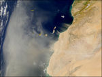

De: La Frikipedia, la enciclopedia extremadamente seria.
De: La Frikipedia, la enciclopedia extremadamente seria. De: La Frikipedia, la enciclopedia extremadamente seria.
| De la serie Países del planeta tierra: | |||||
| | |||||
|---|---|---|---|---|---|
| |||||
| Lema: Cuidado con Osiris que me han dicho que no es árabe. | |||||
| Himno: El baile del Ibis.
| |||||
| 
| |||||
| Capital | Tevas-O-no .Te.bas?. | ||||
| Mayor ciudad | Alejandra. | ||||
| Lenguas oficiales | Árabe,francés,judío,gallego,inglés y moro. | ||||
| Gobierno | República árabe asamblearia | ||||
| Pachá. | Kavalali Mehmed Ali Pachá. | ||||
| Área | Israel Sur. | ||||
| Población | 58000 mastabas, 500 pirámides,123765987 hipogeos. | ||||
| Moneda | Antigüedades | ||||
| Zona horaria | GTME | ||||
| Dominio Internet | .egg (Egispto glorioso) | ||||
| Código telefónico | 265sbgrék centhotep
| ||||
| actualmente gobernada por asambleas del 15M y Democracia Real Ya. | |||||
País muy famoso en el desierto del Sáhara, rodeado por sus simpáticos vecinos los Etiopía y algunos cocodrilos cerca de la 5ª catarata.
Egipto nació como una colonia de la Atlántida, mientras el resto del mundo vivía en el Paleolítico, hasta que los esclavos egipcios se hicieron con el poder y dominaron los OVNIS d elos atlantes y les arrebataron el poder bajo el liderazgo del faraón Narmer, dando así comienzo al Antiguo Egipto.
Tras ser conquistados por Alejandro Magno(del cual se deshicieron diciéndole que era hijo de un dios) fueron gobernados por unos cuantos capitanes griegos, para al final sucumbir ante el Imperio Romano(a pesar de que Cleopatra casi inventa la bomba atómica antes).Luego gobernaodos por los árabes, después el Imperio Turco, para finalmente volver entrar en la historia de la mano de Napoleón y del Imperio Francés y del Imperio Británico.Estos últimos no impusieron allí una colonia, sin un protectorado(que es lo mismo que una colonia pero sin civiles)hasta que legó la Primera Guerra Mundial y los nacionalistas egipcio pudieron al fin tener su propio país, estableciendo una monarquía títere hasta que un militar,Nasser, le dió un golpe de estado y creó el Egipto Contemporáneo.
Durante la Guerra Fría Egipto estuvo a punto de ser invadido por judíos(que decían que tener derechos porque en la Biblia decía que los judíos habian salido de Egipto, y por lo tanto si habian salido es que antes estaban allí dentro no?),Francia e Inglaterra; pero como no habian pedido permiso a los USA y la URSS luchaba por la libertad antiimperialista al final se tuvieron que retirar y Nasser pudo modernizar Egipto, hasta que fue abducido por Jehová en un "carro de fuego",no sin antes hacer resucitar a los faraones que implantaron una dictadura, hasta que los perroflautas egipcios los echaron a base de bombardeos masivos con repollos podres, saboteamientos de los cuerpos de seguridad del estado a través de hackers, linchamiento d elo sprincipales líderes faraónicos.Actualmente Egipto vive días de gloria dmocratica bajo el poder de miles de asambleas democráticas y populares.
En egipto hay muy poco que vsitar, de echo apenas sale en las guías turísticas debido a sus altas temperaturas, que es un país Musulmania),hay muy poca agua, conducen sin luces por la noche, sufren plagas de momias destrozahuesos(por lo menos no te comen el cerebro como los zombies), y son vecinos de Israel.A pesar de ello existen unos cuantos rincones chulos:
El país es un enorme desierto con un regato de mierda(al que pomposamente llaman RÍO Nilo) gracias al cual pueden sobrevivir los humanos allí, hay varios sitemas montañosos al Sur y Este, así como dos oasis artificiales que antes eran tumbas faraónicas que s ellenaron de agua y sirven de pozo(si bebes el agua te enfermas y mueres seguramente será por las momias putrefactas de dentro de las tumbas de los reyes saítas de la XXVI dinastía).
Es bien sabido que lo mejores pañuelos de algodón(si, esas telas que sirven para guardar los mocos y poder enseñárseloas a los amiguetes para ver quién los tienen más grandes y verdes) vienen de Egipto.
Las compañías aéreas suelen estar bajo la protección de Alá(razón por la cual los vuelos de las compañías egipcias se cancelan muchas veces, e vez de orecerse a Maat!!):Por tierra sule usarse el camello o el borrico, que también puedes usar para descubrir tumbas farónicas y se alimentan fácilmente(con vendas de momia).Por el Nilo suelen pasar cruceros turísticos(donde más vale que no te caigas al agua o te cmerán los cancadrilos del Nilo).
la mayoría de la población son refugiados de guerra de países vecinos(libios,palestinos,sirios,libaneses) la mayoría son musulmanes chiitas, seguido de una minoría secular copta(que llevan allí desde que el Imperio Romano se hizo cristiano y asesinarona Hipatia de Alejandria).
Autor(es):